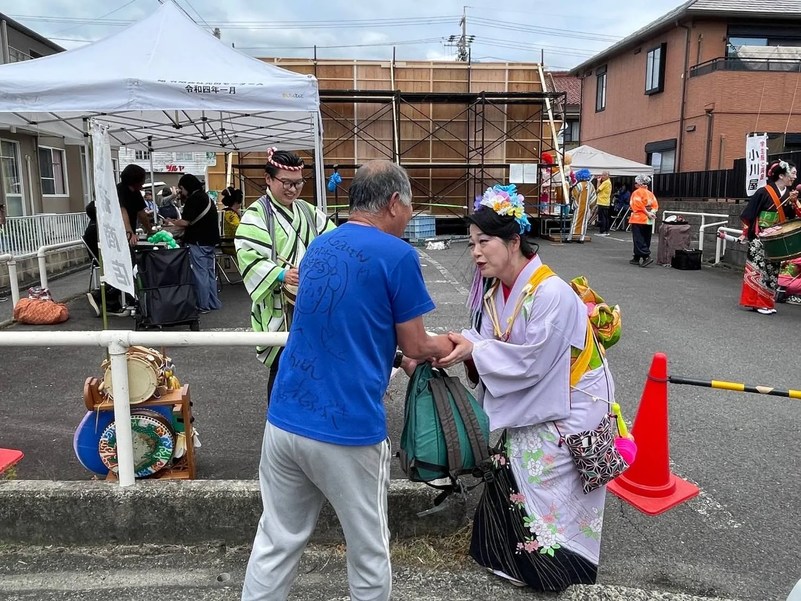
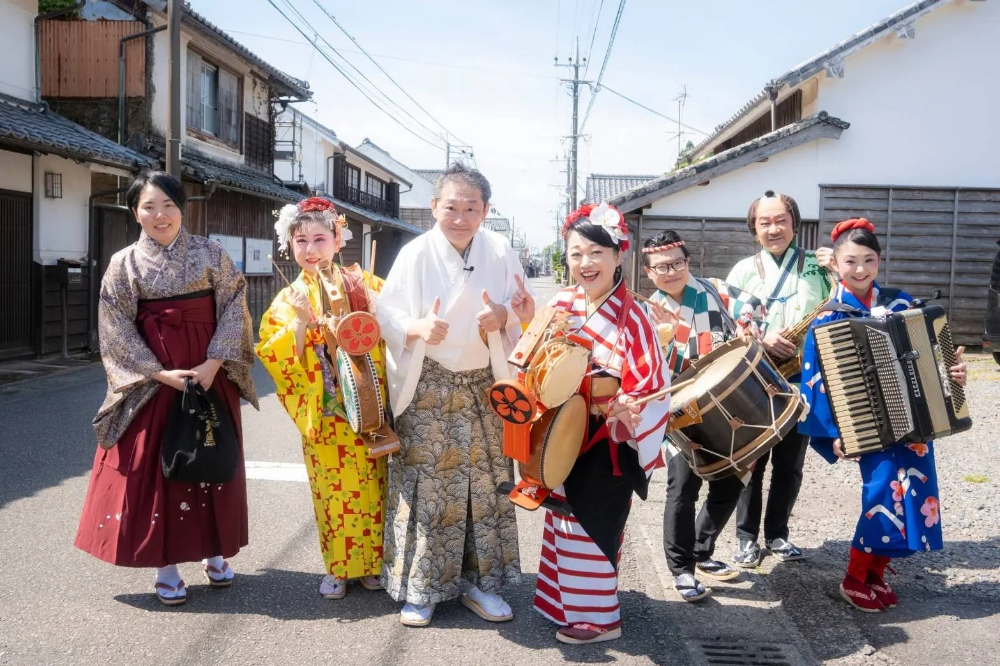
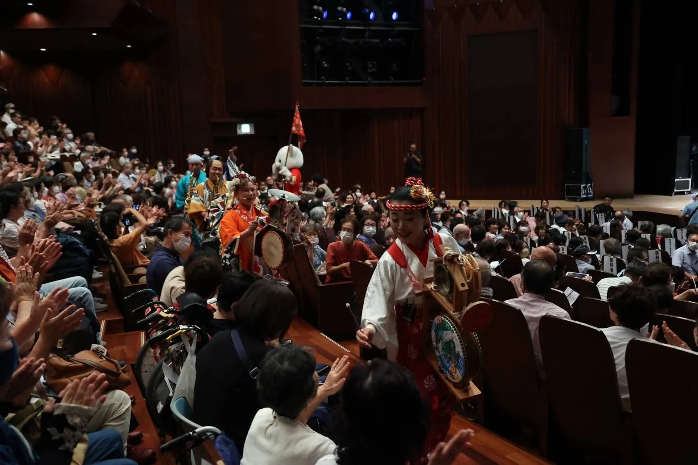
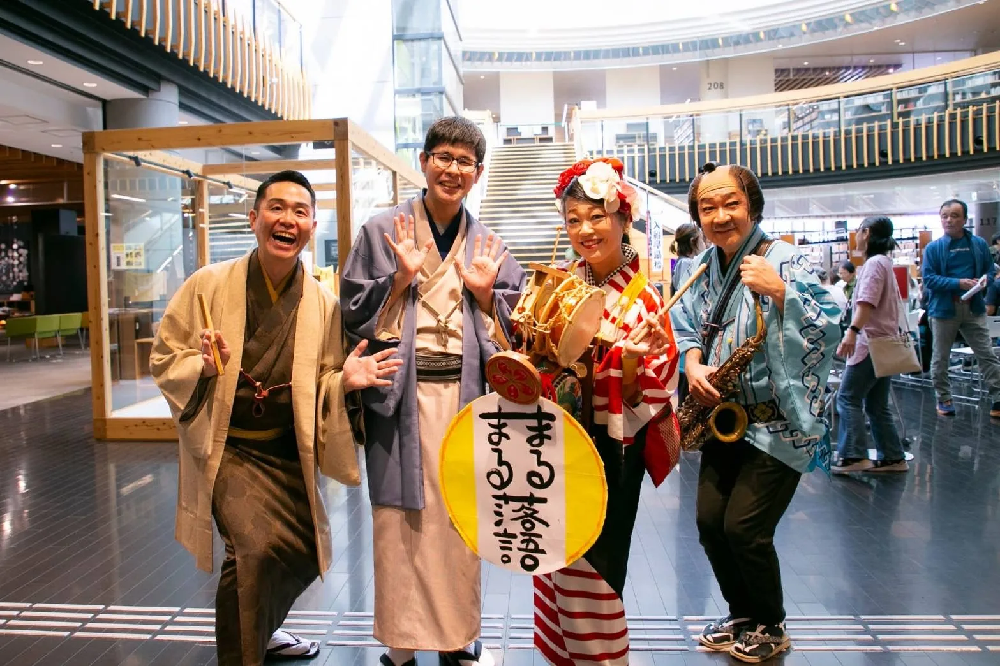
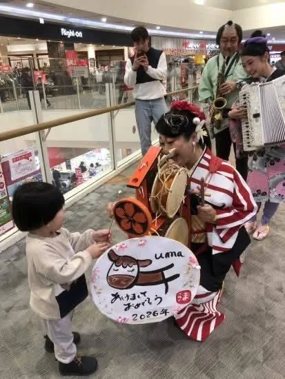
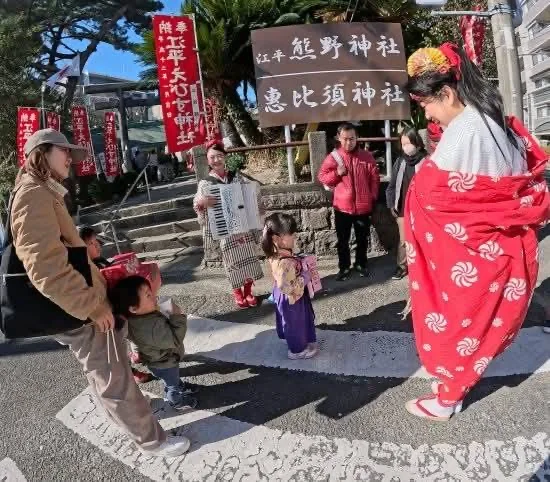
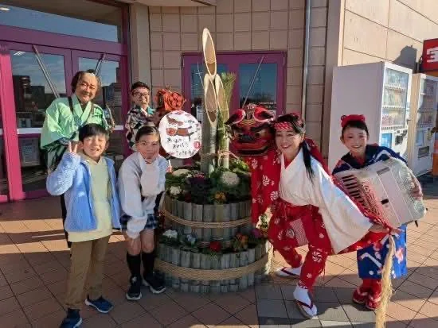
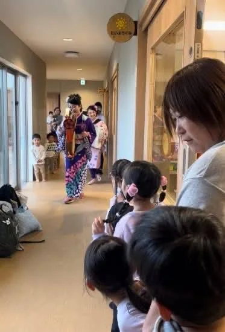
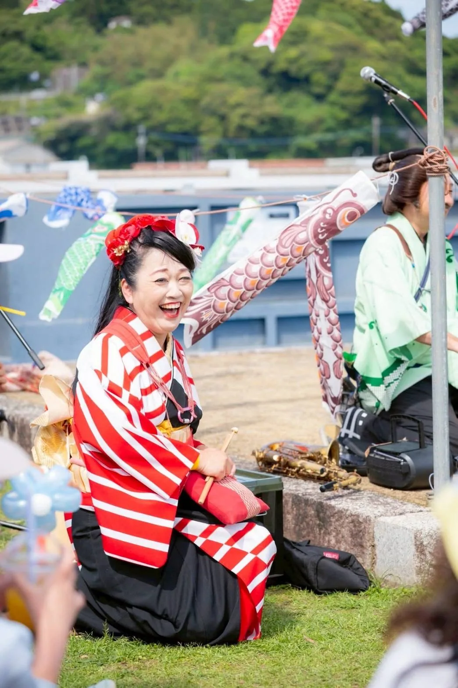
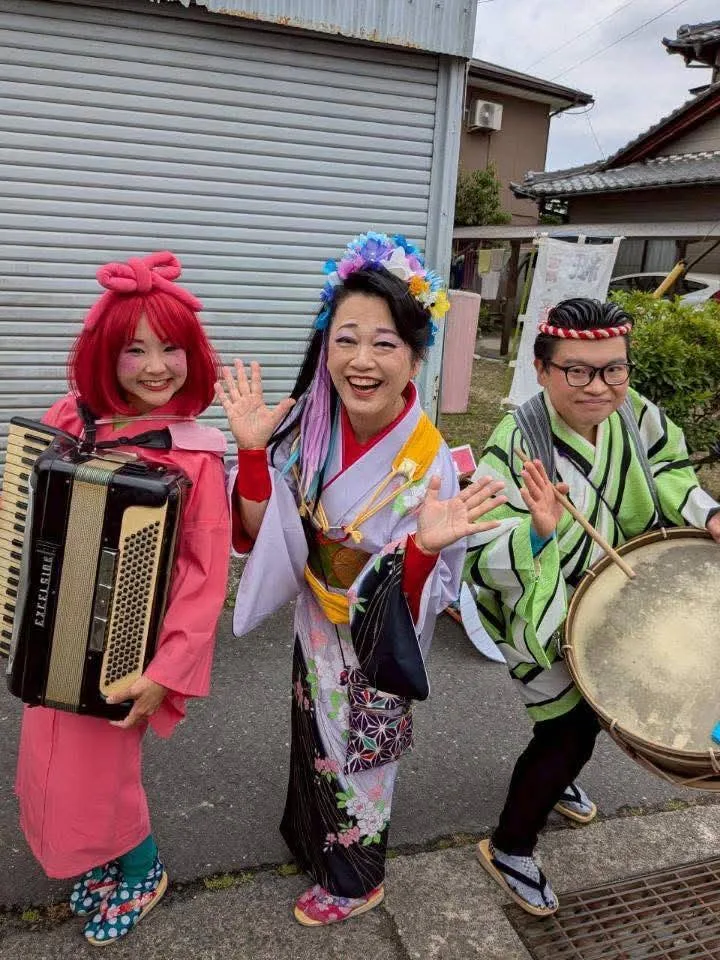

地域と、笑顔と、ちんどん。

OUR HEART
一瞬の出会いが、
私たちの宝物。
ちんどんは、音楽を奏でるだけではありません。
すれ違う人々の心がほっこりあたたかくなり、世代を超えてコミュニケーションがとれることを幸せに感じています。
地域の皆さんにとって、身近な縁起物でありたい。人を笑顔と元気にする芸を、これからも磨いてまいります。
あなたの笑顔にあえるしあわせ。
OUR MOMENTS
笑顔が咲く、私たちの舞台。
まちかどで、舞台で、地域の皆さんと。
音と笑顔を交わした日々の一場面をご紹介します。

TRADITION & COMMUNITYまちとともに

LIVE PERFORMANCE客席にも笑顔を
LOCAL STORIES地域のお祭りに

JAPANESE CULTURE芸を未来へ

PEOPLE & CONNECTIONSご縁を重ねて
MORE SMILES
笑顔に出会う、まちのなかで。
何気ない一瞬の出会いも、私たちの宝物です。





座長 · 宮田若奈
THE PERSON BEHIND THE MUSIC
宮田 若奈 ／ 座長
人と出会い、笑顔を交わす。そのひとときを何よりの喜びとして、ちんどんの芸を届けています。
日本の伝統を大切にしながら、地域の皆さんにとって身近な存在でありたい。そんな想いを胸に、一つひとつの出会いに向き合っています。
※ プロフィール本文はレビュー用の仮原稿です。詳しい経歴・受賞歴はご本人の確認後に掲載します。
SHARING THE DREAM
笑顔をつなぐ、
夢をともに。
私たちが出会いたいのは、同じように人の笑顔を大切にしたいと思ってくださる方。
芸を磨く人も、応援してくださる人も。新しいご縁から、次の夢が広がっていくことを願っています。
ご縁についてのお問い合わせ ↗
STAY CONNECTED
あなたと、つながる場所。
日々の笑顔、演奏の音、言葉で綴る想い。
それぞれの場所から、花ふぶき一座の世界をお届けします。
✿Instagram日々の活動と、出会った笑顔見る ↗
▷YouTubeちんどんの音色とパフォーマンス見る ↗
✎みやちゃんブログ大切に綴ってきた日々の記録読む ↗
♫コミュニティFM・LINE公式正式なリンクを確認後に掲載します準備中
CONTACT
笑顔のご縁を、ここから。
出演のご相談、花ふぶき一座への応援、仲間とのご縁。
お気持ちをお寄せいただければ嬉しいです。
※ 公式LINE・メールでの受付先は、確認後に正式なボタンを設置します。